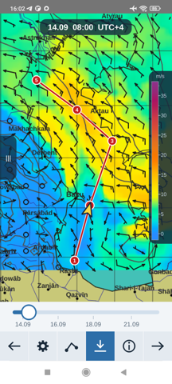

Сразу главное: сама программа обычно исправна. Не работает не
она, а сервер, с которого она берёт прогнозы. Ниже — как это
проверить и что делать дальше.
Почему XyGrib перестаёт скачивать прогноз
XyGrib сама по себе прогнозов не считает и не хранит. Нажимая
«загрузить», она обращается к серверу проекта OpenGribs, который
готовит вырезки из моделей и раздаёт их пользователям. Сервер этот
держится на волонтёрах и пожертвованиях. Когда он ложится —
программа остаётся без данных, хотя с ней самой всё в порядке.
Так было в сентябре 2026 года: сервер молчал больше недели, и об
этом завели обращение
№ 326 в
хранилище проекта. Судя по тому, что его номер до сих пор набирают в
поиске, эта история коснулась многих.
Вторая причина, встречающаяся у пользователей из России, — сетевые
ограничения: сервер бывает недоступен не потому, что выключен, а
потому, что до него не доходит запрос. Со стороны это выглядит
одинаково: программа думает и сообщает об ошибке.
Что можно сделать, ничего не меняя
- Проверить состояние сервера. В самой XyGrib есть окно
состояния серверов; если оно пустое или показывает ошибку —
дело не в вас.
- Подождать. Простои случаются и заканчиваются; проект живой,
его чинят.
- Открыть файл вручную. XyGrib прекрасно показывает любой
GRIB-файл, скачанный откуда угодно — хоть напрямую с сайта NOAA.
Просто «Файл → Открыть».
Чем заменить: MAKGrib
Когда сервер лёг в сентябре, мы не стали ждать, а научили программу
обходиться без него. Так появился MAKGrib — форк XyGrib,
который скачивает прогноз напрямую с серверов американской
метеослужбы NOAA, на выделенный участок карты. Промежуточный
сервер ему не нужен вовсе, а значит, и падать нечему.
Всё остальное — то же самое: тот же движок чтения GRIB, та же карта,
те же слои. Кто работал в XyGrib, узнает её с первого взгляда.
Windows 64 бита, Linux, macOS — и, чего у XyGrib нет вовсе,
версия для Android.
XyGrib для Android
Официальной версии XyGrib для телефона не существует: она есть
только для настольных систем. На форумах судоводителей об этом
спрашивают годами, и в ответ обычно советуют платные программы.
MAKGrib на телефоне — не перенесённое окно с компьютера, а
переделанный экран: карта во весь экран, слои значками, прокладка
маршрута касаниями, погода в точке под пальцем. Скачанный прогноз
остаётся в памяти и открывается без связи — в море это главное.

Честно о том, что мы такое
Мы не XyGrib и не выдаём себя за неё. MAKGrib — самостоятельная
ветка, сделанная поверх её исходников, под той же лицензией GNU GPL
версии 3. Официальный сайт XyGrib —
opengribs.org, её исходники —
на GitHub. Проект
хороший, и если их сервер снова работает, пользуйтесь на здоровье.
Наши исходники тоже открыты:
github.com/sermakarkz/MAKGrib.
Программа бесплатна, без подписки, без учётной записи и без рекламы.
Частые вопросы
Нужен ли прокси или VPN?
Для MAKGrib — нет. Он обращается к серверам NOAA напрямую, а они
общедоступны. Если у вас не открывался именно сервер OpenGribs,
эта причина отпадает сама.
Мои старые файлы GRIB откроются?
Да, формат тот же, движок тот же.
Чем ещё отличается от XyGrib?
Прокладкой маршрута с расчётом времени прихода, погодой в точке под
пальцем, версией для телефона и тем, что просроченный прогноз
показывается с пометкой, а не выдаётся за свежий.
Сколько стоит?
Нисколько, как и XyGrib.